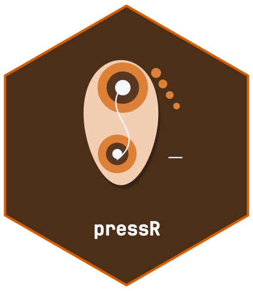
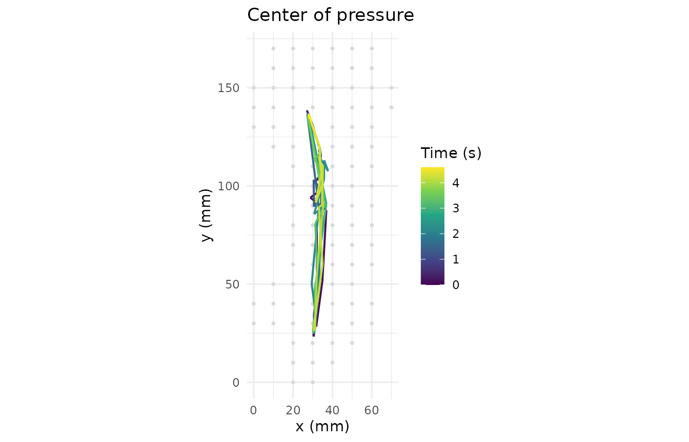
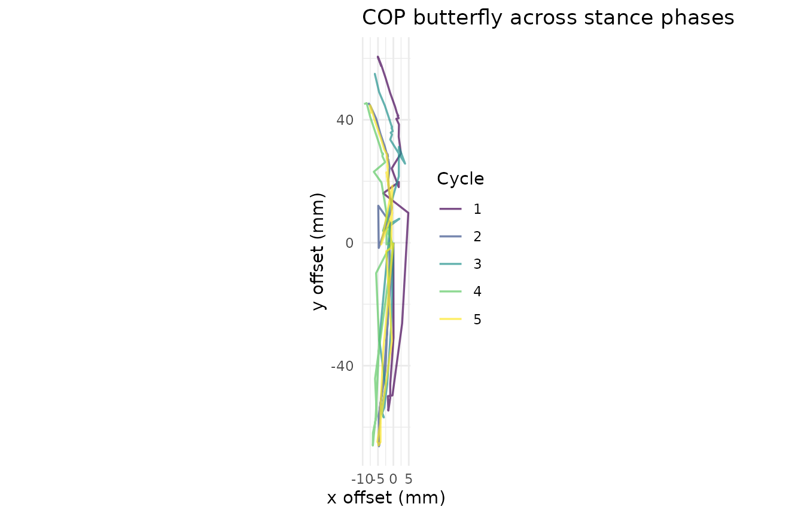
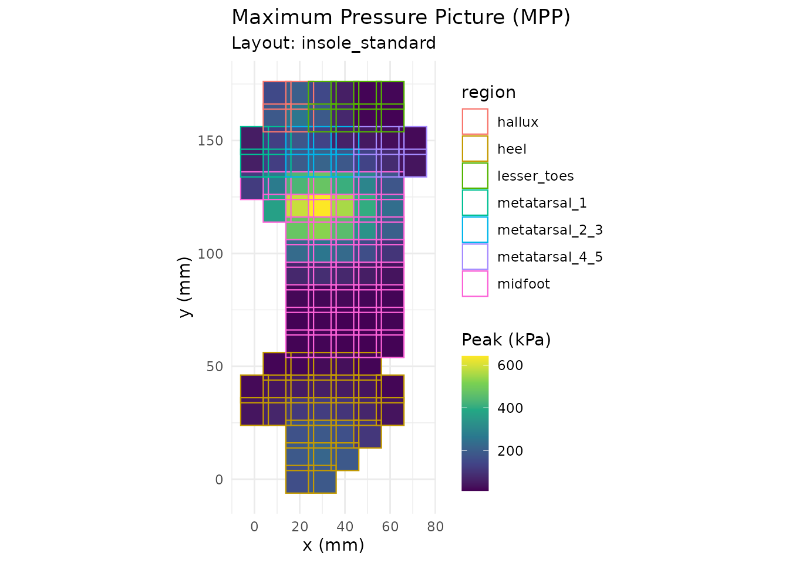
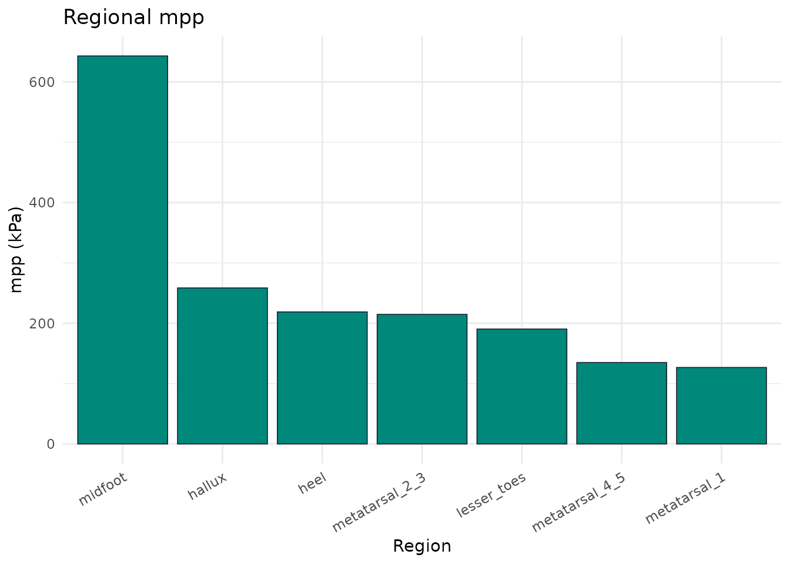
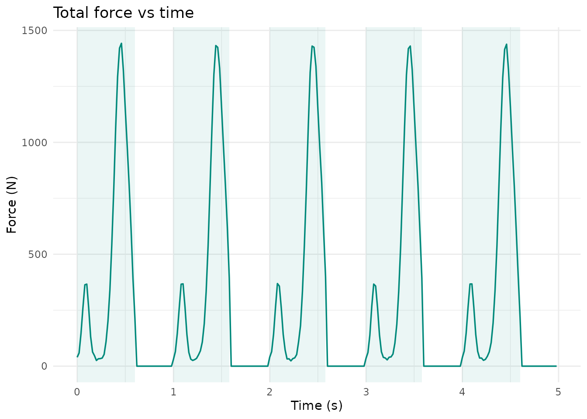
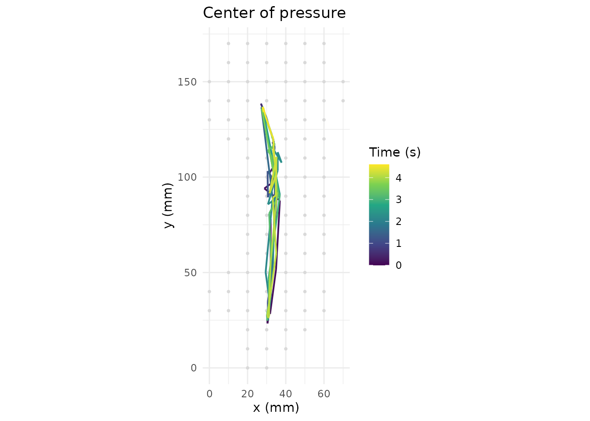

Foot Pressure Analysis for Pedography and Gait Assessment
Source:vignettes/foot-pressure-analysis.Rmd
foot-pressure-analysis.Rmd



Plantar-pressure measurement is used in pedography, gait analysis, and diabetic-foot risk assessment. This vignette demonstrates the workflow using a synthetic in-shoe insole trial.
trial <- pr_example_trial("insole")
trial
#>
#> ── pr_trial ────────────────────────────────────────────────────────────────────
#> • System: "insole"
#> • Layout: "insole_standard"
#> • Frames: 250
#> • Duration: 4.98 s
#> • Sampling: 50 Hz
#> • Sensors: 99
#> • Subject: "EX01"
#> • Date: "2026-11-04"
#> • Condition: "walking"Gait cycle detection
cycles <- pr_calc_gait_cycles(trial)
cycles
#> # A tibble: 5 × 8
#> cycle heel_strike_frame toe_off_frame heel_strike_time toe_off_time
#> <int> <int> <int> <dbl> <dbl>
#> 1 1 1 31 0 0.6
#> 2 2 51 80 1 1.58
#> 3 3 101 130 2 2.58
#> 4 4 151 180 3 3.58
#> 5 5 201 231 4 4.6
#> # ℹ 3 more variables: stance_duration <dbl>, start_frame <int>, end_frame <int>Center of pressure and rollover
pr_plot_cop(trial)
pr_plot_cop_butterfly(trial)
Regional analysis
pr_calc_regional(trial)
#> # A tibble: 7 × 6
#> region mpp mvp max_force contact_area pti_mean
#> <chr> <dbl> <dbl> <dbl> <dbl> <dbl>
#> 1 heel 219. 15.0 349. 42 40.3
#> 2 midfoot 643. 59.5 1234. 61.5 155.
#> 3 metatarsal_1 127. 23.0 41.7 6 65.1
#> 4 metatarsal_2_3 215. 43.0 113. 9 126.
#> 5 metatarsal_4_5 135. 16.0 48.5 9 43.9
#> 6 hallux 258. 29.4 118. 6 82.5
#> 7 lesser_toes 190. 12.7 71.8 12 29.6Plantar-pressure reference observations
These source-specific observations are not universal clinical cut-offs. The synthetic insole example does not establish equivalent acquisition or patient context. Rows marked withdrawn have no verified numeric value.
pr_ref_diabetic_foot()
#> # A tibble: 4 × 11
#> region parameter threshold unit interpretation source source_url status
#> <chr> <chr> <dbl> <chr> <chr> <chr> <chr> <chr>
#> 1 forefoot mpp 700 kPa Case-control R… Armst… https://p… verif…
#> 2 any plantar pti_mean NA kPa*s Withdrawn: exa… Casel… NA withd…
#> 3 forefoot mpp NA kPa Withdrawn: exa… Veves… NA withd…
#> 4 heel mpp NA kPa Withdrawn: exa… Frykb… NA withd…
#> # ℹ 3 more variables: species <chr>, gait <chr>, region_scheme <chr>Composite foot report
pr_plot_foot_report() returns four component plots.
Display them separately here so labels and legends remain readable at
the article width. The HTML/PDF report from
pr_export_report(trial, path, template = "foot") uses these
same components.
panels <- pr_plot_foot_report(trial)
panels[[1]]
panels[[2]]
panels[[3]]
panels[[4]]